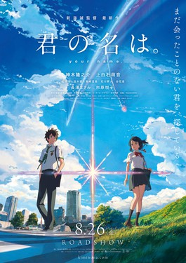

Genero: Romance, Sobrenatural
Duração: 45min
Ano: 2012
A história de Hotarubi no Mori e se foca em uma pequena garota chamada Hotaru. Ela se perde em uma floresta que popularmente é dita como uma floresta em que se reside vários espirítos. Na floresta Hotaru se depara com um jovem utilizando uma máscara de raposa. Ele se diz um espirito com uma maldição que no momento que um humano tocá-lo ele irá desaparecer. A História segue com a jovem gatora visitando a floresta durante suas ferias de verão.
Genero: Drama, Escolar, Mistério, Romance, Sobrenatural
Duração: 1h 46min
Ano: 2016
Mitsuha é uma jovem de uma pequena cidade que sonha em tentar a sorte em Tóquio. Taki um jovem que trabalha em um restaurante em Tóquio. Os dois acabam eventualmente trocando de corpos.
Assista na NetflixGenero: Drama
Duração: 1h 48min
Ano: 2017
Haruki é um jovem que prefere viver a vida sozinho, sem interferir na vida de ninguém, ate que encontra um diário em um hospital. O diário pertence a sua colega de classe, uma garota chamada Sakura Yamauchi, que se revela estar sofrendo de uma doença terminal em seu pâncreas, e que tem pouco tempo de vida. Sakura explica a ele que é a única pessoa fora de sua família que sabe sobre sua condição. Ele promete manter o segredo de Sakura e, apesar de suas personalidades completamente opostas, ele decide estar junto com ela até seus últimos momentos.

Genero: Drama, Escolar
Duração: 2h 09min
Ano: 2016
A história de Koe no Katachi gira em torno de Shōko Nishimiya, uma estudante do primário que sofre de surdez. Ela é transferida para uma nova escola, mas acaba sendo intimidada por seus colegas. Shouya Ishida, um dos valentões responsáveis acaba forçando-a para mudar de escola novamente. Como resultado do bullying contra Shōko, as autoridades escolares tomam medidas sobre o assunto, Shouya é condenado ao ostracismo como punição, sem amigos para falar e não ter planos para o futuro. Anos depois, Ishida tenta reparar seus erros, para redimir-se com Nishimiya.
Assista na NetflixGenero: Fantasia, Ficção Científica, Romance
Duração: 1h 45min
Ano: 2017
Na História acompanhamos Riku, o jovem que lidera a humanidade na guerra entre raças (os humanos não tem escolha nenhuma a não ser fugir, pois é a raça mais fraca desse mundo, não possuem nenhuma magia e nenhuma outra habilidade que dê vantagem entre as outras raças). Ate que Riku encontra Schwi uma Android e juntos tentam dar um fim a essa guerra.
OBS: O mais interessante desse filme é que ele pode ser assistido sem conhecer nada do anime. Pois se passa em tempos diferentes, com personagem diferentes e com o foco e pegada totalmente diferentes. O Filme dá uma boa introdução a história das raças e retrata bem as consequências que uma guerra pode trazer. E para quem já conhece a história original do anime, o filme é ótimo para explicar como o mundo se tornou do jeito que ele é.
Assista na Netflix
Genero: Drama, Slice of Life
Duração: 1h 57min
Ano: 2012
Hana se casou com um lobisomem e teve dois filhos, Yuki e Ame. Depois de muitos anos felizes, seu marido morre e ela percebe que as crianças têm a mesma característica do pai. Agora, os jovens devem decidir se seguem como humanos ou lobos.
Assista na NetflixGenero: Drama, Fantasia
Duração: 1h 55min
Ano: 2018
A história segue com Maquia, uma jovem de um clã onde todos os membros param de envelhecer na adolescência e vivem por séculos. Ela não tem pais e, embora seus dias sejam pacíficos, ela se sente solitária. Mas sua paz é destruída quando um exército ataca, buscando o segredo da imortalidade de seu povo. Maquia é capaz de escapar, mas ela perde seus amigos e sua casa. Vagando sozinha na floresta, ela encontra Ariel, um bebê que perdeu seus pais. A história acompanha a mudança de relacionamento entre os dois à medida que Ariel envelhece e Maquia não.